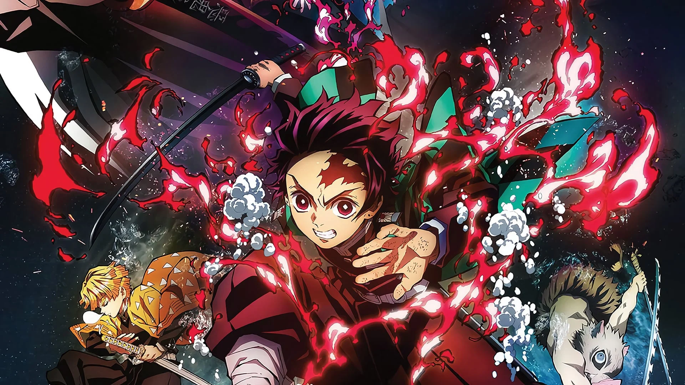
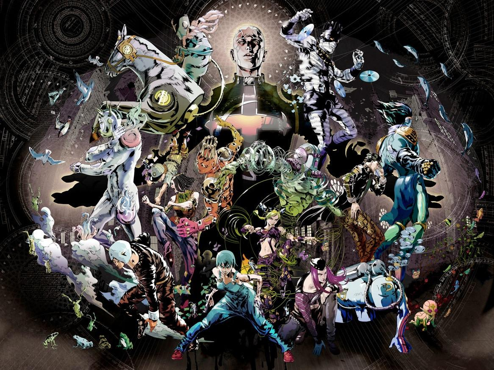
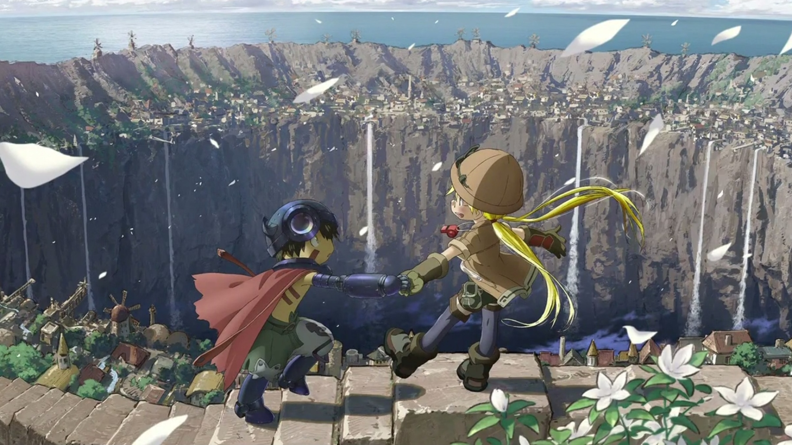
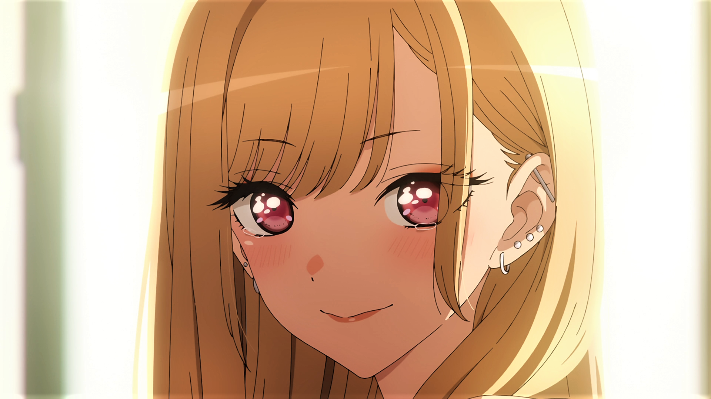
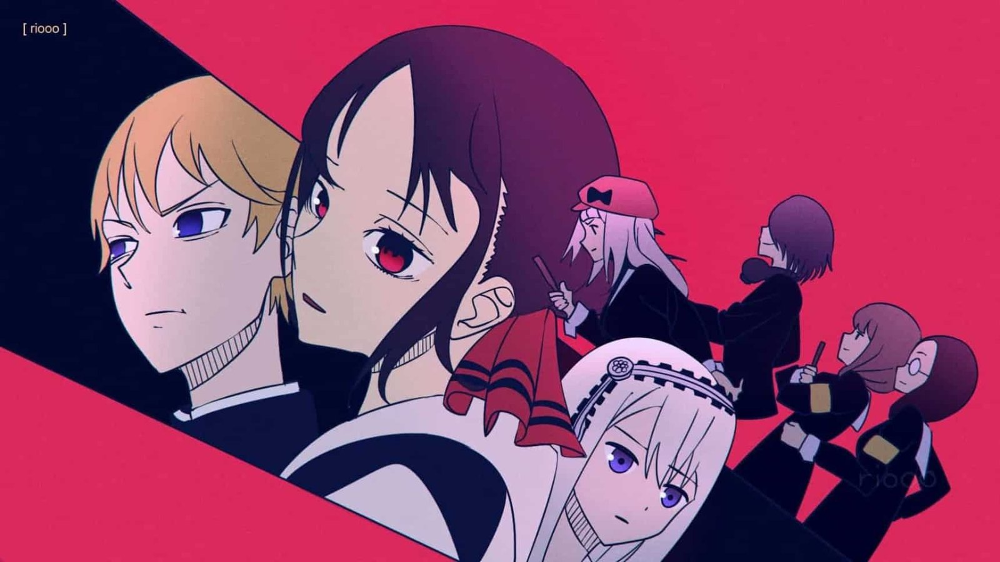
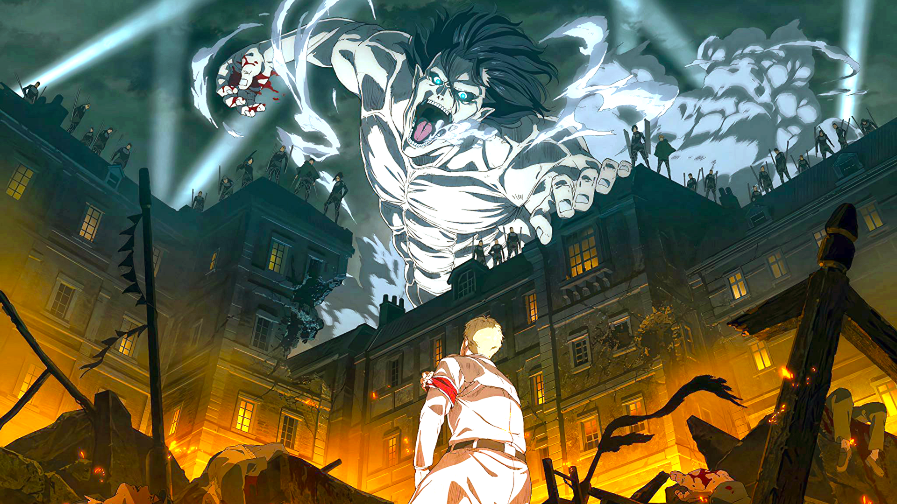

Top 10 Airing Anime 2022
1. Demon Slayer: Kimetsu no Yaiba (Season 2)
 Synopsis
The devastation of the Mugen Train incident still weighs heavily on the members of the Demon Slayer Corps. Despite being given time to recover, life must go on, as the wicked never sleep: a vicious demon is terrorizing the alluring women of the Yoshiwara Entertainment District. The Sound Pillar, Tengen Uzui, and his three wives are on the case. However, when he soon loses contact with his spouses, Tengen fears the worst and enlists the help of Tanjirou Kamado, Zenitsu Agatsuma, and Inosuke Hashibira to infiltrate the district's most prominent houses and locate the depraved Upper Rank demon.
Rating: 8.85/10
605,784 users
2. JoJo's Bizarre Adventure Part 6: Stone Ocean
 Synopsis
In Florida, 2011, Jolyne Kuujou sits in a jail cell like her father Joutarou once did; yet this situation is not of her own choice. Framed for a crime she didn't commit, and manipulated into serving a longer sentence, Jolyne is ready to resign to a dire fate as a prisoner of Green Dolphin Street Jail. Though all hope seems lost, a gift from Joutarou ends up awakening her latent abilities, manifesting into her Stand, Stone Free. Now armed with the power to change her fate, Jolyne sets out to find an escape from the stone ocean that holds her.
However, Jolyne soon discovers that her incarceration is merely a small part of a grand plot: one that not only takes aim at her family, but has additional far-reaching consequences. What's more, the mastermind is lurking within the very same prison, and is under the protection of a lineup of menacing Stand users. Finding unlikely allies to help her cause, Jolyne sets course to stop their plot, clear her name, and take back her life.
Rating: 8.25/10
119,389 users
3. Made in Abyss: The Golden City of the Scorching Sun
 Synopsis
After surviving the brutal challenges of Idofront, Riko now possesses a White Whistle, allowing her to descend into the Abyss's sixth layer—The Capital of the Unreturned. Alongside Reg and Nanachi, Riko begins to explore the uncharted domain, where the ruins of the promised Golden City are located.
As the trio starts to adapt to the harsh environment, they soon encounter dangerous creatures and treacherous landscapes. Their expedition leads them to a village inhabited by strange beings known as "hollows." Despite the creeping sense of unease that welcomes them, the three venture onward to uncover the mysteries of the settlement and long-lost legacies of the forgotten adventurers who once descended into the horrors of the unexplored Abyss.
Rating: 8.82/10
36.987 users
4. My Dress-Up Darling
 Synopsis
High school student Wakana Gojou spends his days perfecting the art of making hina dolls, hoping to eventually reach his grandfather's level of expertise. While his fellow teenagers busy themselves with pop culture, Gojou finds bliss in sewing clothes for his dolls. Nonetheless, he goes to great lengths to keep his unique hobby a secret, as he believes that he would be ridiculed were it revealed.
Enter Marin Kitagawa, an extraordinarily pretty girl whose confidence and poise are in stark contrast to Gojou's meekness. It would defy common sense for the friendless Gojou to mix with the likes of Kitagawa, who is always surrounded by her peers. However, the unimaginable happens when Kitagawa discovers Gojou's prowess with a sewing machine and brightly confesses to him about her own hobby: cosplay. Because her sewing skills are pitiable, she decides to enlist his help.
As Gojou and Kitagawa work together on one cosplay outfit after another, they cannot help but grow close—even though their lives are worlds apart.
Rating: 8.31/10
457.086 users
5. Spy X Family

Synopsis
Corrupt politicians, frenzied nationalists, and other warmongering forces constantly jeopardize the thin veneer of peace between neighboring countries Ostania and Westalis. In spite of their plots, renowned spy and master of disguise "Twilight" fulfills dangerous missions one after another in the hope that no child will have to experience the horrors of war.
In the bustling Ostanian city of Berlint, Twilight dons the alias of "Loid Forger," an esteemed psychiatrist. However, his true intention is to gather intelligence on prominent politician Donovan Desmond, who only appears rarely in public at his sons' school: the prestigious Eden Academy. Enlisting the help of unmarried city hall clerk Yor Briar to act as his wife and adopting the curious six-year-old orphan Anya as his daughter, Loid enacts his master plan. He will enroll Anya in Eden Academy, where Loid hopes she will excel and give him the opportunity to meet Donovan without arousing suspicion.
Unfortunately for Loid, even a man of his talents has trouble playing the figure of a loving father and husband. And just like Loid is hiding his true identity, Yor—who is an underground assassin known as "Thorn Princess"—and Anya—an esper who can read people's minds—have no plans to disclose their own secrets either. Although this picture-perfect family is founded on deception, the Forgers gradually come to understand that the love they share for one another trumps all else.
Rating: 8.76/10
601,775 users
6. Kaguya-sama: Love Is War -Ultra Romantic- (Season 3)
 Synopsis
At the renowned Shuchiin Academy, Miyuki Shirogane and Kaguya Shinomiya are the student body's top representatives. Ranked the top student in the nation and respected by peers and mentors alike, Miyuki serves as the student council president. Alongside him, the vice president Kaguya—eldest daughter of the wealthy Shinomiya family—excels in every field imaginable. They are the envy of the entire student body, regarded as the perfect couple.
However, despite both having already developed feelings for the other, neither are willing to admit them. The first to confess loses, will be looked down upon, and will be considered the lesser. With their honor and pride at stake, Miyuki and Kaguya are both equally determined to be the one to emerge victorious on the battlefield of love!
Rating: 8.41/10
952,360 users
7. Attack On Titan Final Season
 Synopsis
Gabi Braun and Falco Grice have been training their entire lives to inherit one of the seven Titans under Marley's control and aid their nation in eradicating the Eldians on Paradis. However, just as all seems well for the two cadets, their peace is suddenly shaken by the arrival of Eren Yeager and the remaining members of the Survey Corps.
Having finally reached the Yeager family basement and learned about the dark history surrounding the Titans, the Survey Corps has at long last found the answer they so desperately fought to uncover. With the truth now in their hands, the group set out for the world beyond the walls.
Rating: 8.82/10
1,110,758 users
8. My Hero Academia Season 6

Synopsis
The season follows the climatic battle between the Heroes with the students including Izuku Midoriya of the U.A. High School, and the villains that includes the Paranormal Liberation Front led by Tomura Shigaraki. After Hawks undercover the merged-villain group that has put the pieces together from his investigation, the Heroes have assembled all of the information they need to confront them which led to an all-out war that could change the superhuman society.
Rating: 8.08/10
8899 users
9. One Piece

Synopsis
Gol D. Roger was known as the "Pirate King," the strongest and most infamous being to have sailed the Grand Line. The capture and execution of Roger by the World Government brought a change throughout the world. His last words before his death revealed the existence of the greatest treasure in the world, One Piece. It was this revelation that brought about the Grand Age of Pirates, men who dreamed of finding One Piece—which promises an unlimited amount of riches and fame—and quite possibly the pinnacle of glory and the title of the Pirate King.
Enter Monkey D. Luffy, a 17-year-old boy who defies your standard definition of a pirate. Rather than the popular persona of a wicked, hardened, toothless pirate ransacking villages for fun, Luffy's reason for being a pirate is one of pure wonder: the thought of an exciting adventure that leads him to intriguing people and ultimately, the promised treasure. Following in the footsteps of his childhood hero, Luffy and his crew travel across the Grand Line, experiencing crazy adventures, unveiling dark mysteries and battling strong enemies, all in order to reach the most coveted of all fortunes—One Piece.
Rating: 8.67/10
1,127,220 users
9. Love Live! Superstar!! 2nd Season

Synopsis
As another year begins at Yuigaoka Girls' High School, ushering in a fresh batch of students, the school idol club Liella! is excited to expand their membership. However, Liella! is extremely popular due to the astounding talent they have continuously displayed; thus, new students lack the courage to even consider approaching the club, fearing the rigorous training that might lie ahead.
Amid her worries, club leader and co-founder Kanon Shibuya meets first-year student Kinako Sakurakouji and tells her about the world of school idols. This leaves Kinako in awe, but being fairly average herself, she feels she would not be capable of matching the spirited performances of the brilliant Liella! members. Nonetheless, Kinako receives encouragement to join the group and comes to share their dream of reaching for the stars once again in the grand Love Live! Competition.
Rating: 8.09/10
3493 users